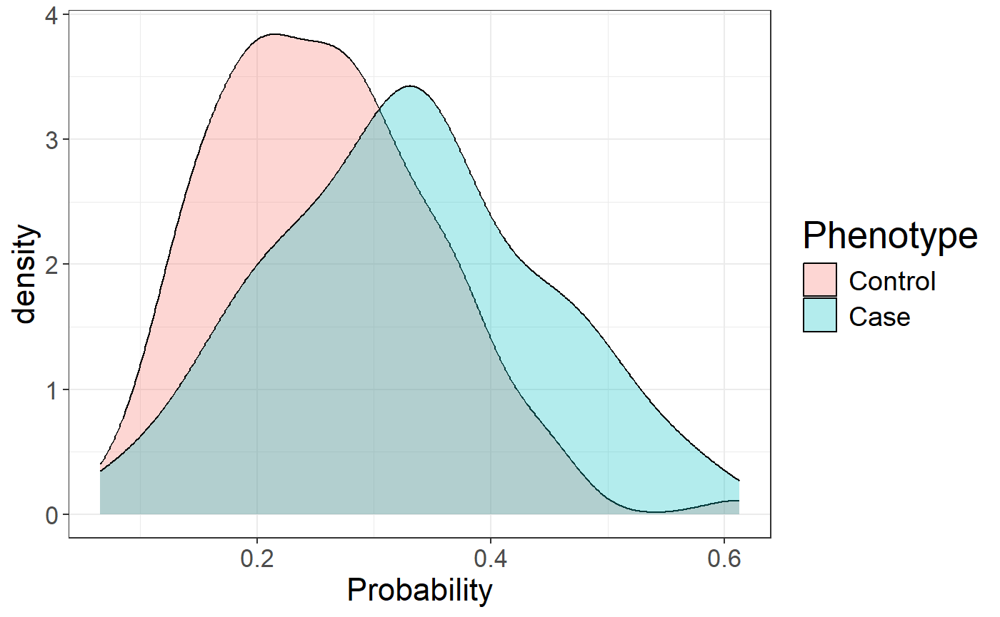

Computing polygenic scores using Stacked Clumping and Thresholding (SCT)
Florian Privé and Michael Blum
May 23, 2019
SCT.RmdIn this document, we show how to compute polygenic risk scores using Stacked Clumping and Thresholding (SCT).
Downloading genotype data and summary statistics
You can download data and unzip files in R. We store those files in a directory called "tmp-data" here.
You can see there how we generated these data from the 1000 Genomes project.
First, you need to read genotype data from the PLINK files (or BGEN files) as well as the text file containing summary statistics.
# Load packages bigsnpr and bigstatsr
library(bigsnpr)## Loading required package: bigstatsr# Read from bed/bim/fam, it generates .bk and .rds files.
snp_readBed("tmp-data/public-data.bed")## [1] "/home/privef/Bureau/bigsnpr/tmp-data/public-data.rds"# Attach the "bigSNP" object in R session
obj.bigSNP <- snp_attach("tmp-data/public-data.rds")
# See how the file looks like
str(obj.bigSNP, max.level = 2, strict.width = "cut")## List of 3
## $ genotypes:Reference class 'FBM.code256' [package "bigstatsr"] with 10 ..
## ..and 24 methods, of which 10 are possibly relevant:
## .. add_columns, as.FBM, bm, bm.desc, copy#envRefClass, initialize,
## .. initialize#FBM, save, show#envRefClass, show#FBM
## $ fam :'data.frame': 559 obs. of 6 variables:
## ..$ family.ID : chr [1:559] "EUR_GBR" "EUR_GBR" "EUR_GBR" "EUR_GBR" ...
## ..$ sample.ID : chr [1:559] "HG00096" "HG00097" "HG00099" "HG00100" ...
## ..$ paternal.ID: int [1:559] 0 0 0 0 0 0 0 0 0 0 ...
## ..$ maternal.ID: int [1:559] 0 0 0 0 0 0 0 0 0 0 ...
## ..$ sex : int [1:559] 1 2 2 2 1 2 1 2 2 1 ...
## ..$ affection : int [1:559] 2 1 1 1 1 1 2 1 1 1 ...
## $ map :'data.frame': 131276 obs. of 6 variables:
## ..$ chromosome : int [1:131276] 2 2 2 2 2 2 2 2 2 2 ...
## ..$ marker.ID : chr [1:131276] "rs13386112" "rs4263140" "rs28446791""..
## ..$ genetic.dist: int [1:131276] 0 0 0 0 0 0 0 0 0 0 ...
## ..$ physical.pos: int [1:131276] 21243 29422 30091 36787 51141 53020 61..
## ..$ allele1 : chr [1:131276] "T" "G" "G" "T" ...
## ..$ allele2 : chr [1:131276] "C" "A" "C" "C" ...
## - attr(*, "class")= chr "bigSNP"# Get aliases for useful slots
G <- obj.bigSNP$genotypes
CHR <- obj.bigSNP$map$chromosome
POS <- obj.bigSNP$map$physical.pos
y <- obj.bigSNP$fam$affection - 1
NCORES <- nb_cores()
# Check some counts for the 10 first variants
big_counts(G, ind.col = 1:10)## [,1] [,2] [,3] [,4] [,5] [,6] [,7] [,8] [,9] [,10]
## 0 476 376 378 380 481 463 389 476 483 478
## 1 64 143 139 136 71 84 133 71 70 70
## 2 19 40 42 43 7 12 37 12 6 11
## <NA> 0 0 0 0 0 0 0 0 0 0# Read external summary statistics
sumstats <- bigreadr::fread2("tmp-data/public-data-sumstats.txt")
str(sumstats)## 'data.frame': 131276 obs. of 7 variables:
## $ chromosome : int 2 2 2 2 2 2 2 2 2 2 ...
## $ marker.ID : chr "rs13386112" "rs4263140" "rs28446791" "rs11900053" ...
## $ physical.pos: int 21243 29422 30091 36787 51141 53020 61687 67535 69022 70325 ...
## $ allele1 : chr "T" "G" "G" "T" ...
## $ allele2 : chr "C" "A" "C" "C" ...
## $ beta : num 0.0121 0.0778 0.083 0.1203 -0.2444 ...
## $ p : num 0.961 0.658 0.635 0.491 0.377 ...We split genotype data using part of the data to learn parameters of stacking and another part of the data to evaluate statistical properties of polygenic risk score such as AUC. Here we consider that there are 400 individuals in the training set.
Matching variants between genotype data and summary statistics
To match variants contained in genotype data and summary statistics, the variables "chr" (chromosome number), "pos" (genetic position), "a0" (reference allele) and "a1" (derived allele) should be available in the summary statistics and in the genotype data. These 4 variables are used to match variants between the two data frames.
names(sumstats) <- c("chr", "rsid", "pos", "a0", "a1", "beta", "p")
map <- obj.bigSNP$map[,-(2:3)]
names(map) <- c("chr", "pos", "a0", "a1")
info_snp <- snp_match(sumstats, map)## 131,276 variants in summary statistics.## 18,798 ambiguous SNPs have been removed.## 112,478 variants have been matched; 0 were flipped and 0 were reversed.If no or few variants are actually flipped, you might want to disable the strand flipping option. Here, these are simulated data so all variants use the same strand and the same reference.
info_snp <- snp_match(sumstats, map, strand_flip = FALSE)## 131,276 variants in summary statistics.## 131,276 variants have been matched; 0 were flipped and 0 were reversed.beta <- info_snp$beta
lpval <- -log10(info_snp$p)Computing C+T scores for a grid of parameters and chromosomes
Clumping
First, the function snp_grid_clumping() computes sets of variants resulting from the clumping procedure that is applied repeatedly with different values of hyper-parameters (threshold of correlation for clumping, window size, and possibly imputation accuracy threshold). By default, the function uses 28 (7 thresholds of correlation x 4 window sizes) different sets of hyper-parameters for generating sets of variants resulting from clumping.
# The clumping step might take some time to complete
all_keep <- snp_grid_clumping(G, CHR, POS, ind.row = ind.train,
lpS = lpval, ncores = NCORES)
attr(all_keep, "grid")## size thr.r2 grp.num thr.imp
## 1 5000 0.01 1 1
## 2 10000 0.01 1 1
## 3 20000 0.01 1 1
## 4 50000 0.01 1 1
## 5 1000 0.05 1 1
## 6 2000 0.05 1 1
## 7 4000 0.05 1 1
## 8 10000 0.05 1 1
## 9 500 0.10 1 1
## 10 1000 0.10 1 1
## 11 2000 0.10 1 1
## 12 5000 0.10 1 1
## 13 250 0.20 1 1
## 14 500 0.20 1 1
## 15 1000 0.20 1 1
## 16 2500 0.20 1 1
## 17 100 0.50 1 1
## 18 200 0.50 1 1
## 19 400 0.50 1 1
## 20 1000 0.50 1 1
## 21 62 0.80 1 1
## 22 125 0.80 1 1
## 23 250 0.80 1 1
## 24 625 0.80 1 1
## 25 52 0.95 1 1
## 26 105 0.95 1 1
## 27 210 0.95 1 1
## 28 526 0.95 1 1Thresholding
Then, for each chromosome, for each set of variants resulting from clumping and for each p-value threshold, the function snp_grid_PRS() computes C+T scores.
multi_PRS <- snp_grid_PRS(G, all_keep, beta, lpval, ind.row = ind.train,
backingfile = "tmp-data/public-data-scores",
n_thr_lpS = 50, ncores = NCORES)
dim(multi_PRS) ## 4200 C+T scores for 400 individuals## [1] 400 4200Stacking C+T predictions
A penalized regression is finally used to learn an optimal linear combination of C+T scores.
final_mod <- snp_grid_stacking(multi_PRS, y[ind.train], ncores = NCORES, K = 4)
summary(final_mod$mod)## # A tibble: 3 x 6
## alpha validation_loss intercept beta nb_var message
## <dbl> <dbl> <dbl> <list> <int> <list>
## 1 0.0001 0.517 -1.40 <dbl [4,060]> 3884 <chr [4]>
## 2 0.01 0.519 -1.58 <dbl [4,060]> 994 <chr [4]>
## 3 1 0.519 -1.50 <dbl [4,060]> 198 <chr [4]>For options for fitting penalized regressions, see this vignette.
From stacking C+T scores, we can derive a unique vector of weights and compare effects resulting from stacking to the initial regression coefficients provided as summary statistics.
new_beta <- final_mod$beta.G
ind <- which(new_beta != 0)library(ggplot2)
ggplot(data.frame(y = new_beta, x = beta)[ind, ]) +
geom_abline(slope = 1, intercept = 0, color = "red") +
geom_abline(slope = 0, intercept = 0, color = "blue") +
geom_point(aes(x, y), size = 0.6) +
theme_bigstatsr() +
labs(x = "Effect sizes from GWAS", y = "Non-zero effect sizes from SCT")
We can use this vector of variant weights to compute polygenic risk scores on the test set and evaluate the Area Under the Curve (AUC).
pred <- final_mod$intercept +
big_prodVec(G, new_beta[ind], ind.row = ind.test, ind.col = ind)
AUCBoot(pred, y[ind.test])## Mean 2.5% 97.5% Sd
## 0.67970973 0.58814437 0.76682221 0.04584201ggplot(data.frame(
Phenotype = factor(y[ind.test], levels = 0:1, labels = c("Control", "Case")),
Probability = 1 / (1 + exp(-pred)))) +
theme_bigstatsr() +
geom_density(aes(Probability, fill = Phenotype), alpha = 0.3)
Best C+T predictions
Instead of stacking, an alternative is to choose the best C+T score based on the computed grid. This procedure is appealing when there are not enough individuals to learn the stacking weights.
library(tidyverse)
grid2 <- attr(all_keep, "grid") %>%
mutate(thr.lp = list(attr(multi_PRS, "grid.lpS.thr")), num = row_number()) %>%
unnest()
s <- nrow(grid2)
grid2$auc <- big_apply(multi_PRS, a.FUN = function(X, ind, s, y.train) {
# Sum over all chromosomes, for the same C+T parameters
single_PRS <- rowSums(X[, ind + s * (0:2)]) ## replace by 0:21 in real data
bigstatsr::AUC(single_PRS, y.train)
}, ind = 1:s, s = s, y.train = y[ind.train],
a.combine = 'c', block.size = 1, ncores = NCORES)max_prs <- grid2 %>% arrange(desc(auc)) %>% slice(1:10) %>% print() %>% slice(1)## size thr.r2 grp.num thr.imp num thr.lp auc
## 1 52 0.95 1 1 25 4.187722 0.6871956
## 2 105 0.95 1 1 26 4.187722 0.6871956
## 3 210 0.95 1 1 27 4.187722 0.6871956
## 4 526 0.95 1 1 28 4.187722 0.6871956
## 5 62 0.80 1 1 21 4.187722 0.6716028
## 6 125 0.80 1 1 22 4.187722 0.6716028
## 7 250 0.80 1 1 23 4.187722 0.6716028
## 8 625 0.80 1 1 24 4.187722 0.6716028
## 9 5000 0.01 1 1 1 4.187722 0.6610441
## 10 10000 0.01 1 1 2 4.187722 0.6610441## [1] 7AUCBoot(
snp_PRS(G, beta[ind.keep], ind.test = ind.test, ind.keep = ind.keep,
lpS.keep = lpval[ind.keep], thr.list = max_prs$thr.lp),
y[ind.test]
)## Mean 2.5% 97.5% Sd
## 0.62958138 0.53717881 0.72081822 0.04692842For this example, the best C+T predictions provides an AUC of 63% whereas stacking, which should be preferred, provides an AUC of 68%.